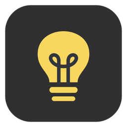
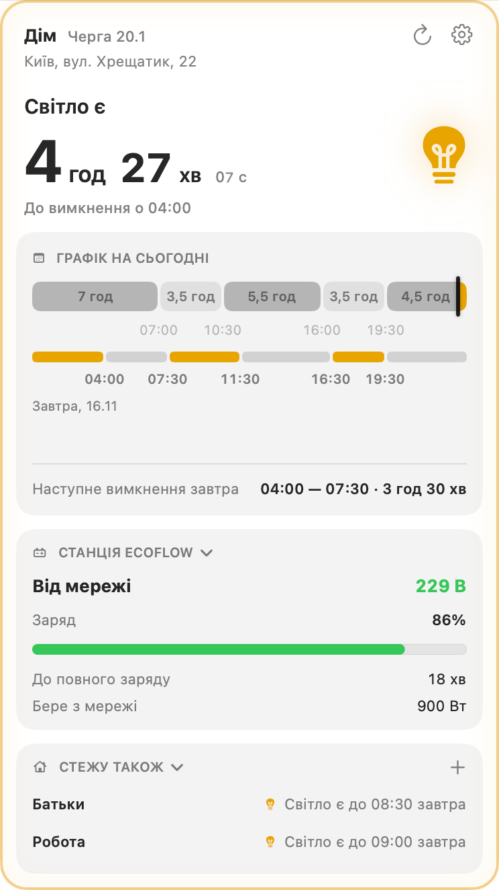
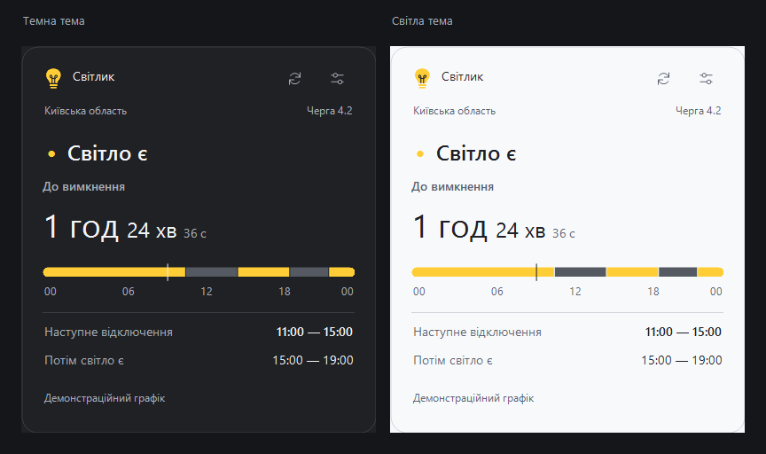
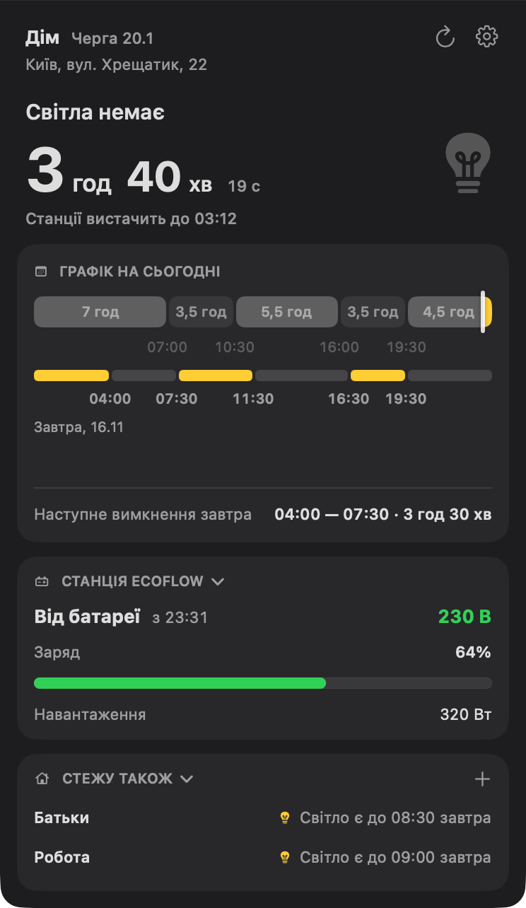

Світло є.
А до котрої?
Світлик — лампочка біля годинника на панелі завдань Windows у рядку меню Mac. Знає графік відключень вашого будинку, рахує, скільки лишилось до зміни світла, і нагадує заздалегідь.
Windows 10 і 11. Як встановити
Mac з M1 і новішими, macOS 26 і новіша. Як встановити
Основна адреса Черга 4.2
Київ, вул. Хрещатик, 22
Світло є
3год27хв00 с
До вимкнення о 16:00
Графік на сьогодні
Завтра, 17.11
Наступне вимкнення16:00 — 19:30 · 3 год 30 хв
Станція EcoFlow
Від мережі229 В
Заряд86%
До повного заряду18 хв
Бере з мережі900 Вт
Стежу також
БатькиСвітло є до 08:30 завтра
РоботаБез світла до 23:30
Це приклад. Свій графік побачите в застосунку, коли введете адресу.
Світло є
До вимкнення
1 год 24 хв 36 с
- МамаСвітло є до 18:00
- ДачаБез світла до 21:30
Тут — приклад графіка. Свій графік побачиш у застосунку, коли вкажеш адресу.

Так Світлик виглядає на Mac.
Натисніть на лампочку у верхньому рядку меню — і відкриється панель: стан світла, відлік, графік на сьогодні й завтра, ваші адреси.


Скільки ще — видно одразу.
Великий відлік до вимкнення або до ввімкнення світла. Не треба рахувати по графіку: Світлик робить це сам і оновлює щосекунди.
Графік на сьогодні й завтра.
Уся доба зрозумілою шкалою: коли світло є, коли немає і скільки триває кожне вікно. Щойно ДТЕК опублікує графік на завтра — він теж з’явиться.
Нагадає заздалегідь.
За 5–60 хвилин до вимкнення — встигнете зберегти роботу й зарядити техніку. І перед ввімкненням, щоб знати, коли повернеться світло.
Ваш будинок, не лише черга.
Світлик перевіряє на сайті ДТЕК саме вашу адресу. Якщо там внесли аварійне чи екстрене відключення, покаже його й орієнтовний час відновлення.
Стежте й за рідними.
Додайте адресу батьків, офісу чи дачі — їхній стан буде в тій самій панелі, а нагадування для кожної вмикаються окремо.
Бачить вашу станцію EcoFlow.
Через Bluetooth, без інтернету: чи світло справді є, заряд, напругу в мережі й на скільки вистачить батареї. Зникло світло — повідомить одразу, навіть якщо ДТЕК ще мовчить.
Як встановити
Кілька хвилин, навіть якщо ви робите таке вперше.
Завантажте Світлик
Натисніть «Завантажити для Mac». Браузер збереже файл Svitlyk-macOS-1.0.0.zip у папку «Завантаження».
Перенесіть Світлик у «Програми»
Відкрийте «Завантаження» і двічі клацніть ZIP — поруч з’явиться Світлик. Перетягніть його в папку «Програми» в лівій колонці вікна Finder.
Відкрийте Термінал
Натисніть ⌘ і Пробіл разом, надрукуйте Термінал і натисніть Enter. Відкриється вікно для команд — потрібна буде лише одна.
Вставте команду й натисніть Enter
Скопіюйте її кнопкою, вставте в Термінал (⌘ V) і натисніть Enter. Пароль не потрібен.
xattr -dr com.apple.quarantine "/Applications/Svitlyk.app" && open "/Applications/Svitlyk.app"Навіщо це: Світлик ще не має платного підпису Apple, тому macOS не відкриває його одразу. Команда знімає це обмеження лише зі Світлика й запускає його. Робиться один раз — нові версії Світлик встановить сам.
Введіть адресу
Угорі праворуч, біля годинника, з’явиться лампочка. Натисніть на неї, введіть свою адресу — і готово.
На Windows
Завантажте Світлик
Натисніть «Завантажити для Windows». Браузер збереже файл Svitlyk.exe у папку «Завантаження».
Перенесіть файл у постійну папку
Наприклад, у «Документи». Тільки не в Program Files — звідти Світлик не зможе оновлюватися.
Запустіть Світлик
Двічі клацніть файл. Якщо з’явиться синє вікно «Windows захистив ваш ПК», натисніть «Докладніше», а потім «Виконати все одно». Так Windows поводиться з усіма новими програмами без платного підпису.
Знайдіть лампочку
Вона з’явиться біля годинника внизу праворуч. Якщо її не видно — натисніть стрілку ^ біля годинника й перетягніть лампочку на панель завдань.
Введіть адресу
Натисніть на лампочку, введіть свою адресу — і готово. Нові версії Світлик встановлюватиме сам.
Часті питання
Звідки графік і наскільки він точний?
Із відкритих даних ДТЕК — того самого джерела, що й приклад угорі сторінки. Щойно опублікують графік на завтра, Світлик покаже і його. Ще він перевіряє на сайті ДТЕК саме ваш будинок: якщо там внесли аварійне відключення, покаже його й орієнтовний час відновлення. Насправді світло часто вмикають на кілька хвилин пізніше, ніж за графіком.
Як дізнатися свою чергу?
У Світлику просто введіть адресу — чергу він знайде сам.
Які міста підтримуються?
Поки Київ і Київська область. Інші області з’являться згодом.
Потрібен інтернет?
Щоб оновлювати графік — так. Якщо мережа зникла, Світлик покаже останній відомий графік і чесно позначить, станом на котру він годину.
Windows пише «Windows захистив ваш ПК». Це безпечно?
Так. Windows показує це вікно для нових програм без платного підпису видавця. Натисніть «Докладніше» → «Виконати все одно».
Не бачу лампочку біля годинника.
Windows ховає нові значки під стрілку «^» біля годинника — лампочка там. Перетягніть її на панель завдань, і вона завжди буде на видноті.
Навіщо команда в Терміналі?
Світлик ще не має платного підпису Apple, тому macOS спершу не дає його відкрити. Одна команда знімає це обмеження лише зі Світлика — ось покроково. Це треба зробити один раз: нові версії Світлик встановить сам.
Чи працює на Маках з Intel?
Поки ні: потрібен Mac з M1 або новішим процесором і macOS 26 чи новіша.
Які зарядні станції бачить Світлик?
Поки EcoFlow Delta 2 Max, на Mac. Світлик під’єднується до станції через Bluetooth, тож Mac має бути поруч і не спати. Підтримка експериментальна.
Як видалити Світлик?
Вимкніть автозапуск у налаштуваннях і закрийте Світлик. На Windows видаліть Svitlyk.exe і папку %LOCALAPPDATA%\Svitlyk, на Mac — Світлик із «Програм» і папку ~/Library/Application Support/Svitlyk.
Нехай графік буде поруч.
Завантажте Світлик, запустіть і введіть свою адресу. Далі він працює сам.
Windows попередив? Натисніть «Докладніше» → «Виконати все одно».
Далі: перетягніть Світлик у «Програми» й виконайте одну команду — ось як.
Усі версії та зміни